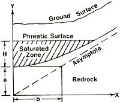
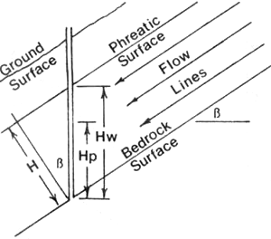
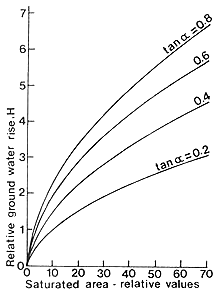
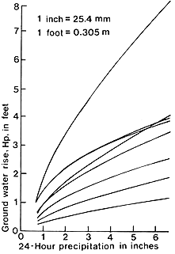
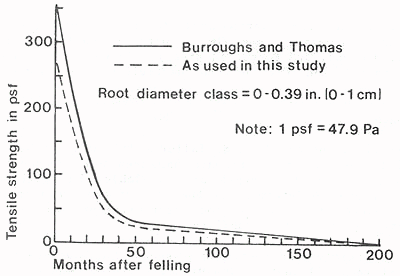
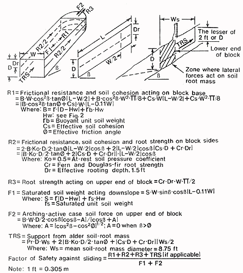

| USDA Forest Service | Rocky Mountain Research Station | Moscow FSL | Soil and Water Engineering |
|---|
Landslide Hazard Rating for the Oregon Coast RangeEdward R. Burroughs, Jr. |
Abstract
The landslide hazard rating system for shallow soils on steep terrain over hard sandstone has three components: ground water response to precipitation, soil shear strength (including root strength), and a factor of safety model. Ground water rise over a hyperbolic-shaped bedrock surface in debris avalanche terrain is empirically derived as a function of easily measured site characteristics. Data on soil shear strength (ø and c) are based on triaxial tests on samples from sites with a high potential for translational failure. Root strength is the sum of the residual strength of Douglas-fir roots as they decline with time after clearcutting and the passive resistance to sliding of an alder soil-root mass. Driving and resisting forces are calculated for a three-dimensional block using estimated ground water rise for a selected design storm, soil shear strength, and estimated root strength.Keywords: Slope stability
Authors
Edward R. Burroughs, Jr., M. ASCE, Research Engineer, Intermountain Forest and Range Experiment Station, Forest Service, U.S. Department of Agriculture, 1221 S. Main Street, Moscow, ID 83843.
Four pairs of basins were located with basins from 0.22 acre (0.09 ha) to 4.2 acre (1.7 ha). A recording piezometer was installed at the lower end of each basin, and a recording rain gauge was located as close as possible to the top of each basin pair. Data from the 7-day piezometer charts and the 30-day rainfall charts were analyzed to identify distinct periods of rainfall that caused individual ground water rises and peaks. The amount of rainfall (P) that initiates a ground water rise was all rainfall within the 24-hour period containing the rise, and antecedent precipitation (Pa) is that rainfall in the preceding 24-hour period. A 24-hour period was used so that published precipitation frequency studies and local daily precipitation records can be used with the model to estimate ground water response for storms of a selected frequency.
Field measurements show that the slope of the ground surface becomes parallel to the bedrock slope a short distance away from the channel bottom. A measurement of the ground slope gradient on a transect perpendicular to the axis of the drainage bottom approximates the slope of the bedrock surface. The mean of the measurements on each side of the drainage bottom is used to estimate tan α at this location.
Bedrock exposed in typical debris torrent sites has a hyperbolic cross-sectional shape. Figure 1 represents a channel with a hyperbolic bedrock surface supporting soil saturated to a depth, H, and Figure 2 relates the piezometric response, Hp, to H and Hw. The hyperbolic equation can be used to develop an expression for the cross sectional area, SA, of saturated soil as a function of H, as influenced by the slope of the asymptote. Figure 3 was developed by substituting values of H and tan α into the equation and plotting the resulting values of SA. For any value of SA, the four curves show how increasing values of tan α (that is, more deeply incised drainage channels) cause a greater ground water depth, H. SA is a function of basin area, precipitation characteristics, and saturated hydraulic conductivity. The abcissa of Figure 3 can be viewed as the axis for these major independent variables with tan α and other site characteristics modifying the basic shape of the ground water response curve.
 |
 |
| Fig. 1. -- Cross Section of One-half of a Typical Channel | Fig. 2. -- Longitudinal Section Relating Piezometric Rise, Hp, to H and Hw |
An empirical equation of the form: Hp = A + B*P + C*ln P + D*Pa approximates these general curve shapes and relates Hp to precipitation. Coefficients A, B, C, and D are functions of cos β, basin area, tan α, antecedent precipitation, and saturated hydraulic conductivity. Because no field measurements were made of the last variable, saturated hydraulic conductivity is assumed to be the same for each basin. This equation was fit to storm data for each basin by linear regression using events with antecedent precipitation less than 0.66 in. (17 mm), the maximum for no ground water response (Fig. 4). An evaluation showed that basin area and tan α cannot explain differences in the shape of ground water response curves without using storm intensity. High-intensity rainfall produces a higher ground water level for the same amount of rainfall than lower intensity rainfall (1). Average storm intensity, Al, for each basin pair was calculated from all storm data and used as an interaction with physical site characteristics in the prediction equation.
Coefficients A-D from each basin were then plotted against characteristics such as area, tan α, and basin length, and width, to develop an empirical relationship of site characteristics to each coefficient. A stepwise linear regression program fit the general model to all field data with a standard error of 0.258 ft (7.9 cm). The model matches data very closely for small to large basins with moderate-to-high values of tan α in moderate-to-high rainfall intensity zones. Basins with these characteristics have the greatest potential for slope failure and estimates of piezometric response to precipitation are of the most value in stability analysis.
 |
 |
| Fig. 3. -- Relative Change in Hp as a Function of Saturated Area | Fig. 4. -- Ground Water Response for Storms with No Antecedent Precipitation |
Unexplained variance in the test of the ground water model has four principal sources: instrumentation, installation of equipment, measurement error, and experimental error. Calibration of recording piezometers and rain gauges reduced instrument error to a minimum. Data were checked closely to eliminate the most obvious inconsistencies, but some marginal readings were left in the data sets. The major source of unexplained variance is the use of 24-hour precipitation that may contain several periods of rainfall.
As the last step in making this model operational, the average storm intensity for each basin pair was correlated with published values of 2-year, 24-hour precipitation for each site. The user can then estimate the appropriate Al value to use for other sites. This empirical ground water response model meets the immediate need for use in an operational slope stability evaluation model.
The root reinforcing mechanism proposed for Douglas-fir in the Oregon Coast Range is that of individual soil-root masses joined at their edges by large numbers of fine roots that co-occupy the soil. After the trees are felled, the fine roots around the lateral edges of the root systems rapidly dwindle in number and individual strength. The margins of the root systems continue to retreat with time, leaving only the larger roots in the soil. Burroughs and Thomas (2) measured the decline in numbers and tensile strength of individual roots for coast Douglas-fir (Pseudotsuga menziesii [Mirb.] Franco var. menziesii) with time after clearcutting. Test samples were taken from vertical planes midway between trees where the isolation of individual soil root masses would be most evident. Residual root strength after timber harvest was expressed as force per unit area and declined from about 350 psf (16.75 kPa) for uncut coastal Douglas-fir 0-0.39 in. (0-1 cm) root size to about 51 psf (2.44 kPa) within 36 months after clearcutting (Fig. 5).
This Douglas-fir residual root strength model was used for the Oregon Coast Range study site because of the shallow soils over massive bedrock, seasonally high ground water levels, and a translational failure mode. Residual strength presented in Figure 5 represents the average potential root strength. Only 75 percent of this estimated potential strength was used in the slope stability model because not all roots reach their potential strength at the same time during slope failure.
The linear colluvial drainage bottoms at the lower ends of basins where ground water accumulates are frequently so wet that Douglas-fir grows mainly on the ridgetops and side slopes. Overstory vegetation in these wet drainages is predominantly red alder (Alnus rubra Bong.) and bigleaf maple (Acer macrophyllum Pursh.). Swordfern is the only major understory component with any significant root strength found in drainage bottoms. These plants grow about 3 ft (1 m) apart with nearly complete ground cover. The force required to pull a fern plant out of a vertical soil face averaged about 35 psf (1.67 kPa) of soil, and was used to indicate root strength for this species.
|  |
| Fig. 5. -- Residual Douglas-fir Root Strength per Unit Area after Timber Harvest |
TRS is the total support provided by an alder soil-root mass located at the lower end of the block. Developed strength is the sum of 1) the passive resistance of the soil-root mass and the downslope soil wedge, and 2) resistance to movement generated by lateral forces acting on the unit. Passive pressure was calculated by use of a Mohr diagram (Ref. 4, p. 426-429) for expected values of Cs, ø, D, Hw, and β. For each combination of variables, the passive pressure at the failure surface and at the ground surface was measured from the Mohr diagram and the average passive pressure, Pr, was the mean of these two values. The user can evaluate the stability of a drainage bottom with or without trees in the block (TRS = 0), and in each case, Douglas-fir growing on sideslopes with lateral roots penetrating the sides of the block.
|  |
| Fig. 6. -- Diagram of Forces Acting on the Soil Block used in Stability Analysis |
The model was developed to evaluate the stability of drainage bottoms in proposed harvest areas to reflect postharvest ground water response and residual root strength after clearfelling and burning. The user estimates the length of time after harvest to maximum instability considering progressive loss of root strength and the estimated rate of new timber stand establishment. The user estimates the largest expected storm for the period the drainage is at risk, the expected antecedent rainfall, and calculates the average rainfall intensity for the site. The user selects points down the drainage bottom for evaluation, and at each point determines soil depth, tan α, bottom slope (β), block width, and block length. The user enters these variables together with basin area and precipitation characteristics into an HP-41 calculator program as prompted; the result is an estimated factor of safety. The user performs enough evaluations in the basin using site data at each point to estimate the postharvest stability of the drainage bottom.
The model was field checked against existing debris avalanche sites by reconstructing site conditions and rainfall, then entering these data into the model. Sites with an estimated factor of safety below an accepted threshhold compared well with actual debris avalanches. Work is continuing on the effect of bias on estimation of the factor of safety (Burroughs, Hammond, and Booth, in press).
Burroughs, E.R., Jr. 1985. Landslide Hazard Rating for the Oregon Coast Range. Proceedings of Symposium Sponsored by Committee on Watershed Management, Irrigation & Drainage Div., ASCE. Denver, CO: ASCE Convention, April 30-May 1, 1985. 132-139.